⚡
Automatic & manual save
Saved automatically while the call runs and when it ends. Prefer control? Turn auto-save off and hit Save now (or Alt+Shift+S).
A Chrome extension that quietly records who joined your call, when they were first and last seen, how long they stayed and how much they spoke. It marks your class or team list Present, Late or Absent, charts attendance over time, and exports everything to CSV, Excel, PDF or JSON in one click.
storage permission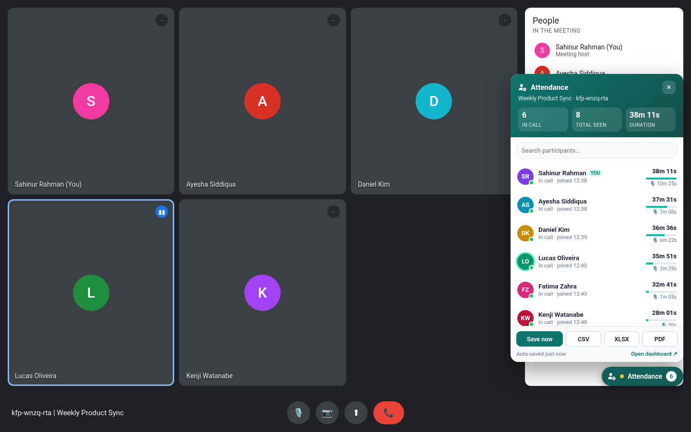
Built for teachers, team leads and anyone who needs to know who was really there.
Saved automatically while the call runs and when it ends. Prefer control? Turn auto-save off and hit Save now (or Alt+Shift+S).
First seen, last seen and time in call for everyone. Leaves and rejoins become separate sessions, and gaps aren't counted.
Uses Meet's own on-screen speaking indicator to estimate how long each person talked. No audio is ever processed.
Paste names or import a CSV of expected attendees, link it to a meeting code and see Present / Late / Absent live in Meet, in the dashboard and in every export.
Set a late threshold and a minimum time in call (minutes or % of the meeting). Short visits are flagged Too short.
Per-person attendance rate, average time, speaking total and trend, plus attendance-over-time, top speakers and speaking-share charts.
Meetings with the same code are grouped into a series with a who-came-when matrix you can export to Excel or CSV.
Messages shown in Meet's chat panel are saved with the meeting and exported (CSV, Excel sheet, PDF, JSON).
Small pop-ups in Meet when someone joins, rejoins or leaves, with an optional quiet sound.
Add tags and notes to any meeting, filter your history by tag and export a tag or date range in bulk.
CSV, Excel (status-coloured), branded PDF with summary stats, JSON, chat CSV and copy as table for Google Sheets. All encoders are bundled; nothing comes from a CDN.
Names in Bengali, Arabic, CJK and more render correctly in PDFs. The interface is available in English and বাংলা.
Follows your system theme by default, or force light or dark. Works in Meet, the popup and the dashboard.
Alt+Shift+M toggles the panel, Alt+Shift+S saves now. Change them in Chrome's shortcut settings.
Several detection strategies plus a MutationObserver keep it working as Meet's layout changes, and short UI glitches are smoothed out.
Only the storage permission. No servers, no accounts, no analytics. Back up or wipe your data any time.
Real screenshots from the extension's automated test suite.
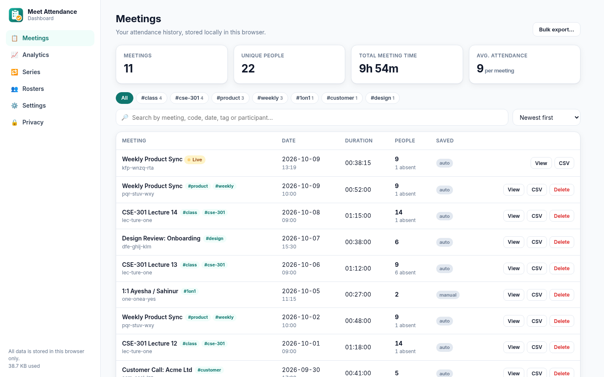
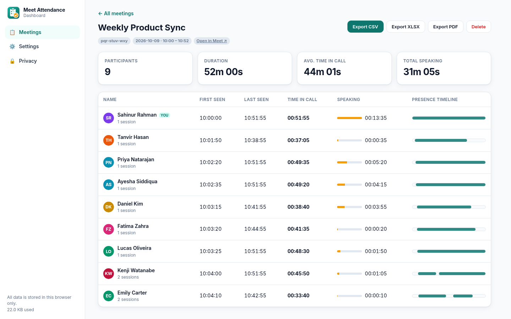
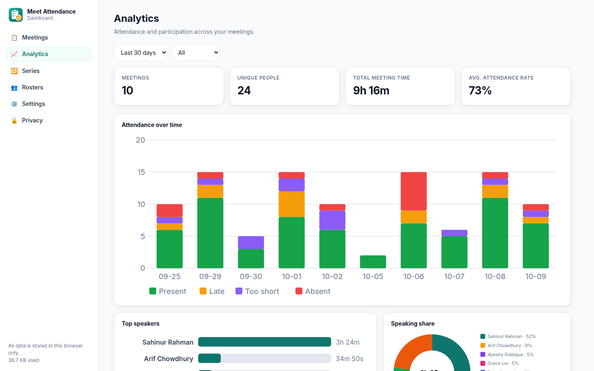
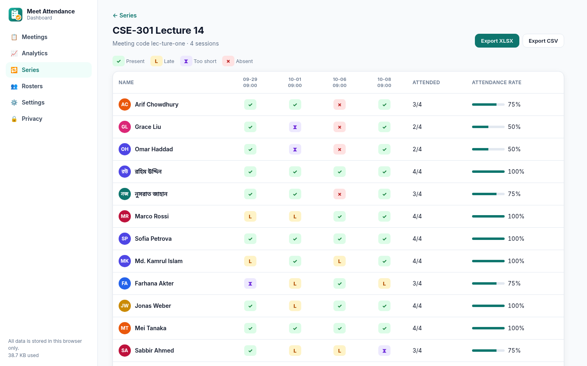
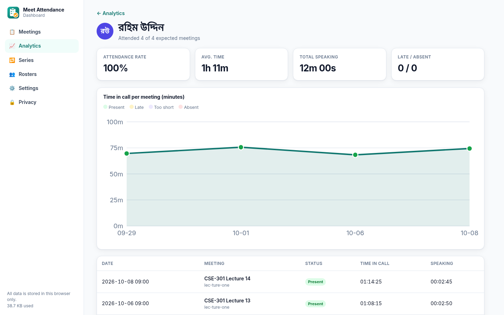
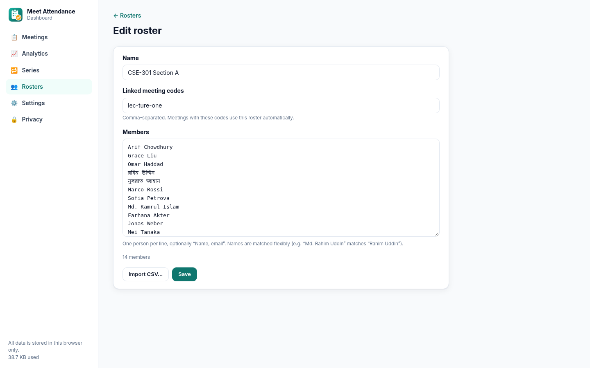
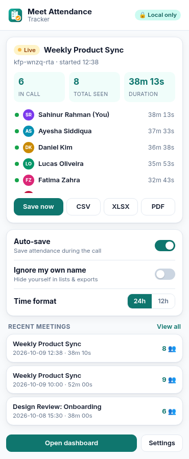
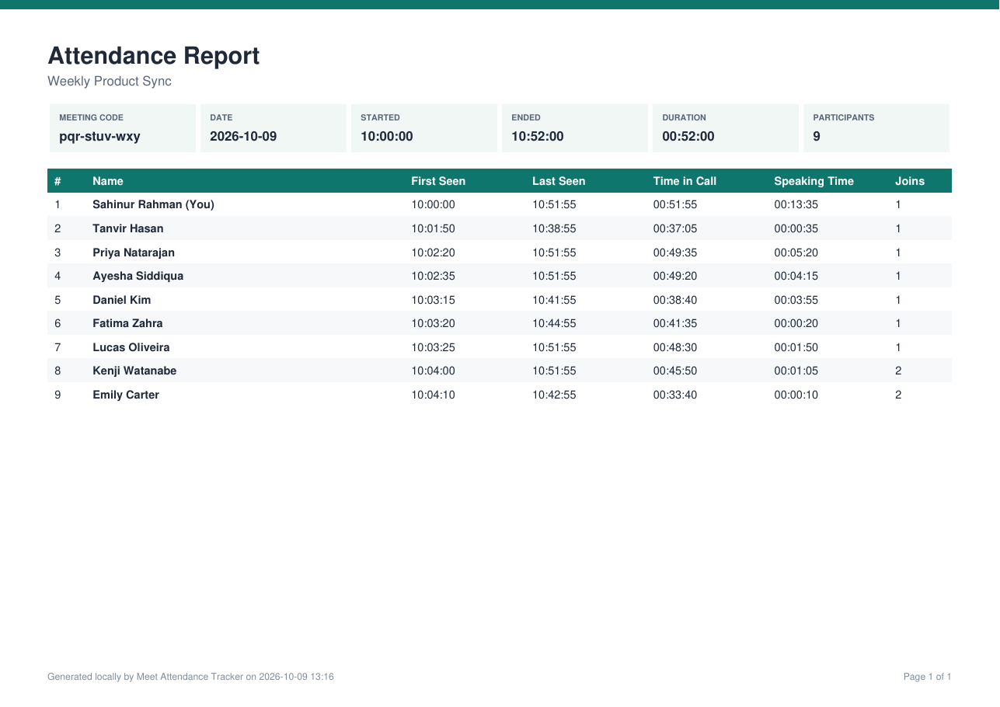
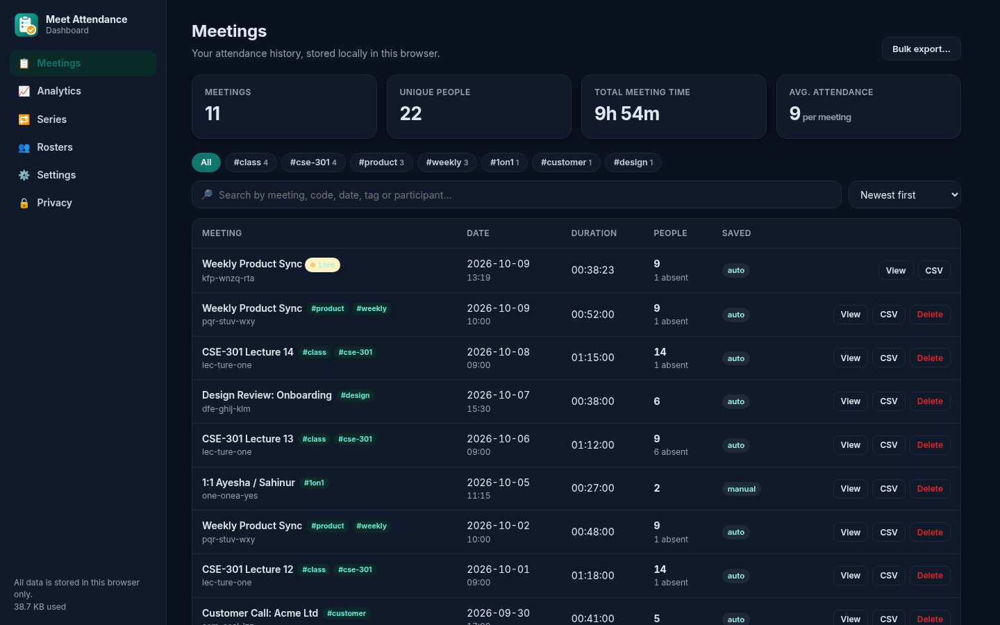
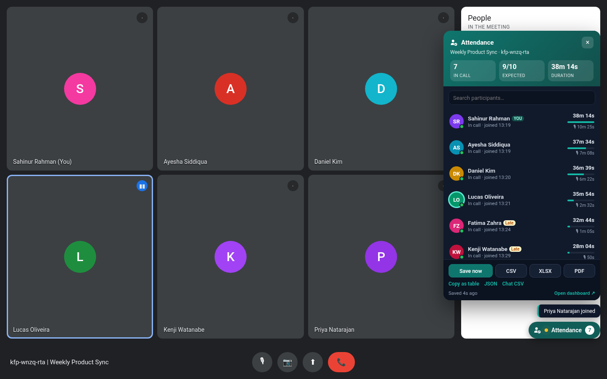
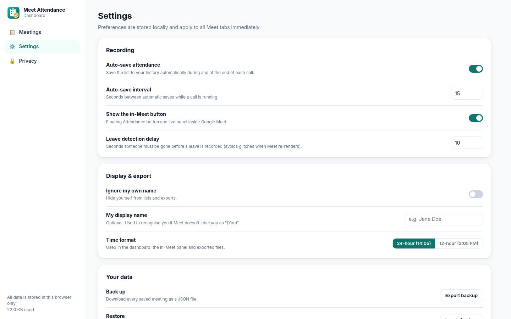
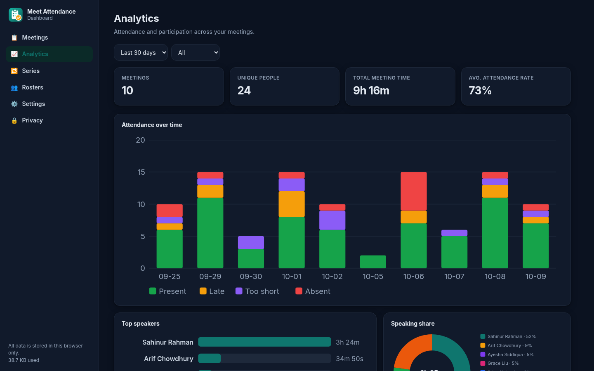
Tracking starts on its own as soon as participants appear.
Open the Attendance panel in Meet or the toolbar popup at any time.
Download CSV, XLSX, PDF or JSON, or explore history, rosters and analytics in the dashboard.
Planned, not built yet. None of these are in the current version. Cloud features would be strictly opt-in, and local-only stays the default.
Optional, opt-in export of attendance straight to a Sheet or Drive folder.
Import class rosters and post attendance back to Classroom.
The same tracker for Teams and Zoom web meetings.
Shared rosters and reports for schools and teams.
Weekly attendance summaries in your inbox.
Optional summaries from captured chat and notes.
Packaged builds for Firefox Add-ons and the Edge store.
One-click install instead of loading it unpacked.
Read exported reports comfortably on a phone.
Works in Chrome, Edge, Brave and other Chromium browsers (v110+).
git clone -b feature/full-extension https://github.com/SahinurDEV/Meet-Attendance-Tracker, then unzip it.chrome://extensions.extension/ folder.# build a store-ready zip
git clone -b feature/full-extension https://github.com/SahinurDEV/Meet-Attendance-Tracker
cd Meet-Attendance-Tracker
npm install
npm test # unit + browser tests
npm run package # → dist/meet-attendance-tracker-v2.1.0.zipstorage, plus a content script on meet.google.com. Keyboard shortcuts and themes need no extra permissions.Read the full privacy policy. Please follow your organisation's policies and local laws when recording attendance.
No. Only the person taking attendance installs it.
It's a close estimate from Meet's on-screen speaking indicator, sampled about once a second. Meet sometimes shows only some tiles, so open the People panel for the most complete list.
The same meeting is resumed, so you won't get a duplicate.
Names are matched flexibly: exact names, aliases, reordered names and honorifics such as "Md." all match. Anyone on the roster who never appears is Absent, people joining after your late threshold are Late, and people below the minimum time are marked Too short.
Messages are saved only while Meet's chat panel has shown them. You can turn chat capture off in Settings.
Yes, it works with any account that can open meet.google.com in a Chromium browser.